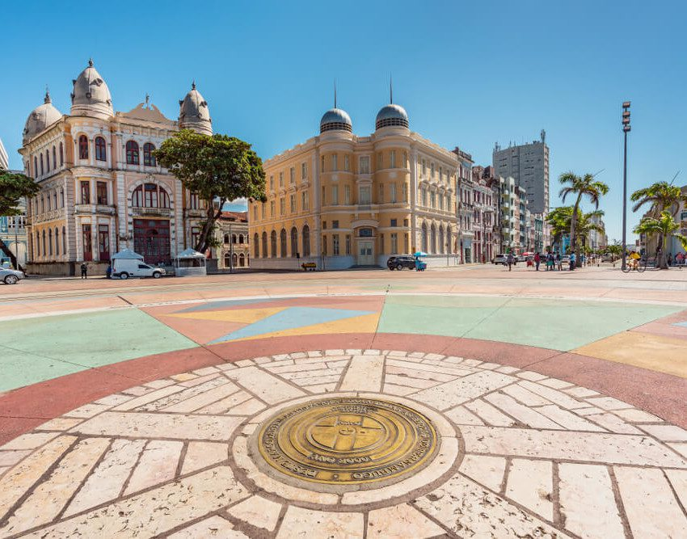

Um marco histórico e cultural
Marco zeroé um dos pontos turísticos mais conhecidos do Recife. Ele marca o ponto inicial das estradas do estado de Pernambuco e é o centro geográfico da cidade.
Localizado no Bairro do Recife, o Marco Zero é rodeado por edifícios históricos e oferece uma vista incrível para o Rio Capibaribe. O local é também um centro de eventos culturais, recebendo feiras, exposições e apresentações artísticas.
Ao visitar o Marco Zero, você também pode apreciar a Rosa dos Ventos, uma obra do artista plástico Cícero Dias, que está no chão da praça e simboliza a conexão da cidade com o mundo.
